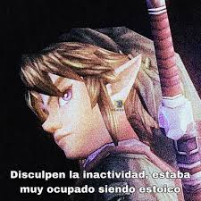

Tipos:
Herramientas o dispositivos necesarios (por orden afabetico)
Legend of Zelda: Breath of the Wild (ゼルダの伝説 ブレス オブ ザ ワイルド Zeruda no Densetsu Buresu obu za Wairudo?, tdl. «La leyenda de Zelda: El aliento de la naturaleza») es un videojuego de acción-aventura de 2017 de la serie The Legend of Zelda, desarrollado por la filial Nintendo EPD en colaboración con Monolith Soft y publicado por Nintendo para las consolas Wii U y Nintendo Switch.
